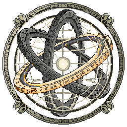
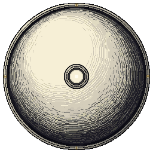
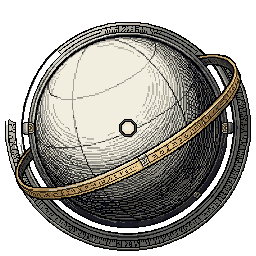
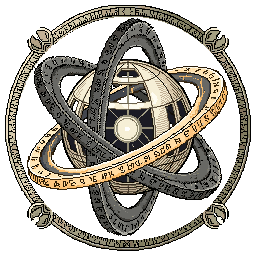
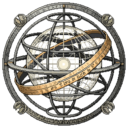

REFERÊNCIA DE IDENTIDADE · ARTE ATUAL
Esfera atual do jogo
As bases anteriores se misturam aos aros gravados, à trama prateada e aos detalhes dourados do jogo.

Centelha Sagrada
O volume da esfera original recebe o núcleo claro e uma borda gravada discreta.

Despertar Ritual
O primeiro anel vira uma faixa alquímica; núcleo e meridianos aproximam a forma do jogo.

Convergência Hermética
Prata gravada, órbitas cruzadas e estrutura mais vazada revelam o mecanismo celeste.

Plenitude Divina
A armilar completa encontra os selos, a trama prateada e a faixa dourada da Esfera atual.
PixelLab Pro · PNG transparente · 256 × 256 por conceito · série v2 · use os botões para comparar.